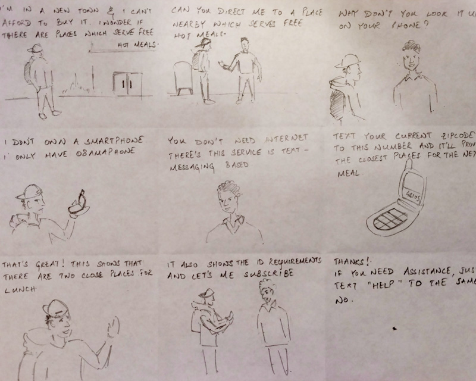
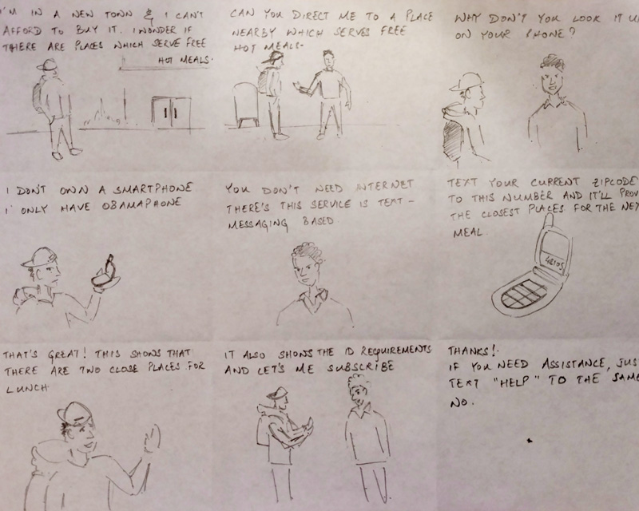

Accepted for publication at CHI Student Design Competition 2017
Overview
This project aimed at addressing the needs of the food insecure and homeless populations. We began by trying to understand, through interviews, the problems that these people faced in accessing the resources provided by the government and reviewed literature on ICT solutions for this population.
Our research (literature and interviews) revealed the main challenges that the target audience faces and their apprehensions. Our solution focused on creating a platform which will enable them equal access to information regarding resources for their immediate upliftment.
Project Details
Duration
December 2016 - January 2017
Tools Used
Sketch, Origami, Adobe Illustrator, Final Cut Pro
Role
I led and conducted interviews and identified key areas for research, and served as the designer for this project.
Outcome
We created a text-message based system that increases access to hot meals for homeless populations. The system will send out information about the nearest food kitchens from a given zipcode along with other information needs.
Objective
We wanted to provide the food insecure population with information for improved access to information resources in order to meet one of the most basic amenities - food.
01. Research
Literature
1.
The homeless have various information needs ranging from transportation, education, housing, job search, and basic needs such as food.
2.
Technology that is familiar and visually basic resulted in openness, and increased engagement with the system.
3.
Increase in requests for emergency food assistance in 71% of the cities, and in the no. of visits to emergency kitchens in 78% of the cities.
Interviews
We interviewed 13 people at a local community kitchen and shelter. Our primary goal was to find out the needs expressed by the population and the reasons for failure of current solutions. We also interviewed two social workers to get an insight into the needs expressed by the target audience to them.
Insights
Although there is an abundance of information about community kitchens among the homeless community, most of it is spread through word of mouth. This method often leaves information incomplete, inconvenient for those on the move, and difficult to remember.

1.
The homeless have various information needs ranging from transportation, education, housing, job search, and basic needs such as food.
2.
Technology that is familiar and visually basic resulted in openness, and increased engagement with the system.
3.
Increase in requests for emergency food assistance in 71% of the cities, and in the no. of visits to emergency kitchens in 78% of the cities.
Interviews
We interviewed 13 people at a local community kitchen and shelter. Our primary goal was to find out the needs expressed by the population and the reasons for failure of current solutions. We also interviewed two social workers to get an insight into the needs expressed by the target audience to them.
Insights
Although there is an abundance of information about community kitchens among the homeless community, most of it is spread through word of mouth. This method often leaves information incomplete, inconvenient for those on the move, and difficult to remember.
02. Design
Personas
From the interview analysis we found two broad types of users emerge. We modeled them into two distinct personas which differed primarily in their outlook and motivations. These were: the people who were newly homeless; and the people who have been homeless for an extended duration.
Newly homeless people are more concerned about finding a job and do not think long term in terms of where their meals are coming from. People who have been homeless long-term have goals of ensuring constant access to free-food and shelter and try to find work within the vicinity.


Constraints
Due to nature of the population we are targeting we first defined the contraints for a potential solution as these can significantly affect use and adoption. We identified them through several interviews that we carried out at a local homeless shelter.
Most of them do not own a smartphone and have access to only obamaphones
A significant section tends to move around from place to place
They gather information through word-of-mouth.
Carriers have a limit on the number of text messages, minutes and/or data.
Brainstorming
We used a why/how laddering approach to generate different possible solutions that can help address this problem. Our final solution tries to connect the target population with information that is possessed by the social workers or other members of the population through text messages. Crowdsourcing appealed to us greatly as the homeless people have a strong network.
We created sketches and interaction flows for our brainstormed solution. This enabled us to understand how our users will use the solution and how it will meet their needs.

Scenarios
We made scenarios for two of the potential solutions we had brainstormed. These scenarios were based upon the persona we created and helped us to define the ways users with interact with the design and narrow down the scope of our solution to be more usable for the target audience. It also helped us eliminate one of the solutions as we felt that it would beyond the scope of the project.
 


03. Solution
Concept
We designed a system that possessed all the features our users required to meet their needs. We created high-fidelity mockups of how the text messaging system would look like. This helped us conduct usability tests with users and get feedback.
Prototypes
Finding Hot Meals
The text-message system allows the user to enter in their zip code to receive a list of all locations serving free hot meals for that week. The information contains the name, address, days and times food is served, as well as identification requirements to receive a free meal.
Notifications
The user can also choose to receive weekly notifications of all the locations and corresponding information for the zip code they entered..
Crowdsourced Updates
The user can also update the database with new information they discover through their interactions with other people. This will be shared with other people in the area, however with the information that it is unverified.
System Assistance
If a user needs help using our system, they can text “Help” and receive instructions on what to enter based on different options available to interact with the system.
From the interview analysis we found two broad types of users emerge. We modeled them into two distinct personas which differed primarily in their outlook and motivations. These were: the people who were newly homeless; and the people who have been homeless for an extended duration.
Newly homeless people are more concerned about finding a job and do not think long term in terms of where their meals are coming from. People who have been homeless long-term have goals of ensuring constant access to free-food and shelter and try to find work within the vicinity.
Due to nature of the population we are targeting we first defined the contraints for a potential solution as these can significantly affect use and adoption. We identified them through several interviews that we carried out at a local homeless shelter.
Most of them do not own a smartphone and have access to only obamaphones
A significant section tends to move around from place to place
They gather information through word-of-mouth.
Carriers have a limit on the number of text messages, minutes and/or data.
Brainstorming
We used a why/how laddering approach to generate different possible solutions that can help address this problem. Our final solution tries to connect the target population with information that is possessed by the social workers or other members of the population through text messages. Crowdsourcing appealed to us greatly as the homeless people have a strong network.
We created sketches and interaction flows for our brainstormed solution. This enabled us to understand how our users will use the solution and how it will meet their needs.
Scenarios
We made scenarios for two of the potential solutions we had brainstormed. These scenarios were based upon the persona we created and helped us to define the ways users with interact with the design and narrow down the scope of our solution to be more usable for the target audience. It also helped us eliminate one of the solutions as we felt that it would beyond the scope of the project.
Concept
We designed a system that possessed all the features our users required to meet their needs. We created high-fidelity mockups of how the text messaging system would look like. This helped us conduct usability tests with users and get feedback.
Prototypes
Finding Hot Meals
The text-message system allows the user to enter in their zip code to receive a list of all locations serving free hot meals for that week. The information contains the name, address, days and times food is served, as well as identification requirements to receive a free meal.
Notifications
The user can also choose to receive weekly notifications of all the locations and corresponding information for the zip code they entered..
Crowdsourced Updates
The user can also update the database with new information they discover through their interactions with other people. This will be shared with other people in the area, however with the information that it is unverified.
System Assistance
If a user needs help using our system, they can text “Help” and receive instructions on what to enter based on different options available to interact with the system.
Final Video
04. Evaluation
Usability Tests
We evaluated our designed solution with several homeless people. We used the wizard of oz method and asked them to imagine themselves in different scenarios and the use the system.
We found that they appreciated the ability to use the system from any device including flip-phones. We noticed that several people were semi-literate and struggled with interpreting the instructions. We believe that some degree of training might be required.

Usability Tests
We evaluated our designed solution with several homeless people. We used the wizard of oz method and asked them to imagine themselves in different scenarios and the use the system.
We found that they appreciated the ability to use the system from any device including flip-phones. We noticed that several people were semi-literate and struggled with interpreting the instructions. We believe that some degree of training might be required.